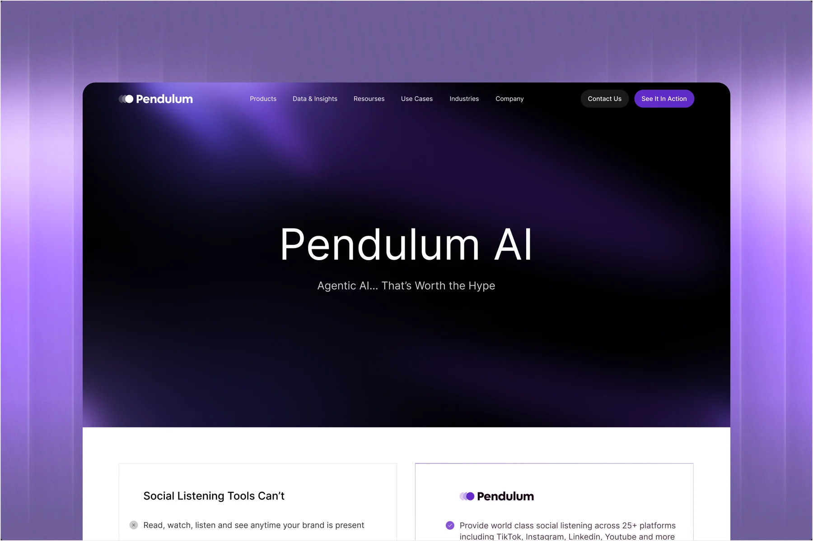
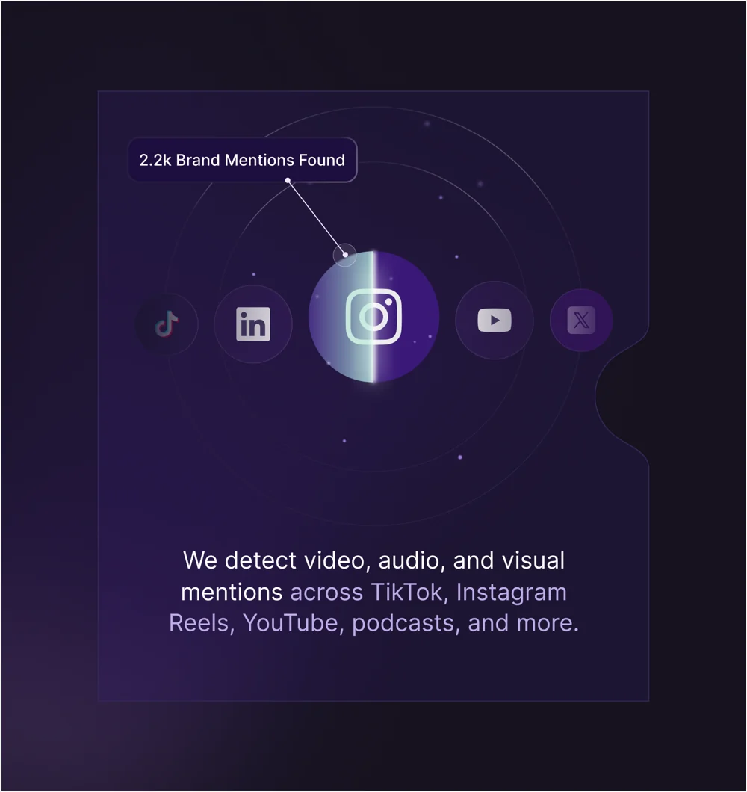
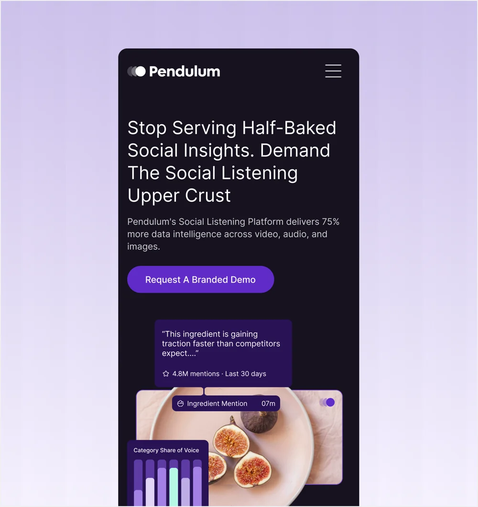
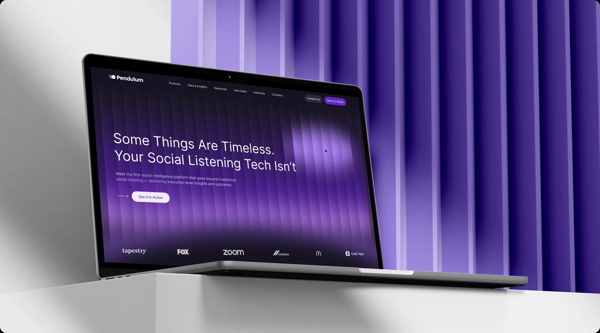

2026
AKC
- Real Estate
- Web Platform
- AI-assisted Development



Pendulum is an AI-powered social intelligence platform that helps brands understand online conversations across video, audio, images, and text.
I joined the website project after the core visual direction and initial pages were established. I refined designs already in progress, added new pages, created original illustrations, and built interactive prototypes.
Working within the existing design foundation, I developed additional pages and refined layouts while maintaining a consistent visual language. Alongside the interface work, I created custom illustrations to support the content and communicate product concepts.
Creating illustrations from scratch was a significant part of my contribution. It strengthened my ability to communicate ideas visually and combine original artwork with interface design within an established creative direction.
The project also gave me more experience joining an ongoing design process, understanding its foundations, and extending the work consistently across new pages and visuals.


